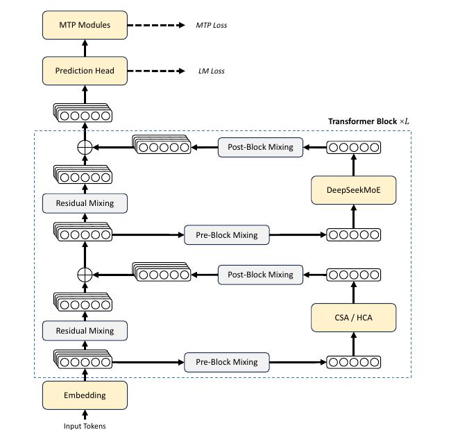
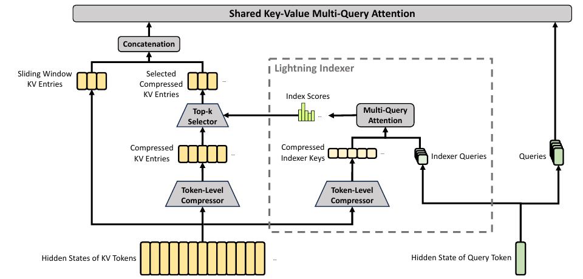
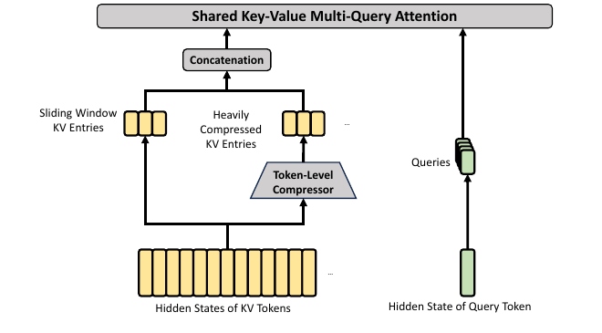
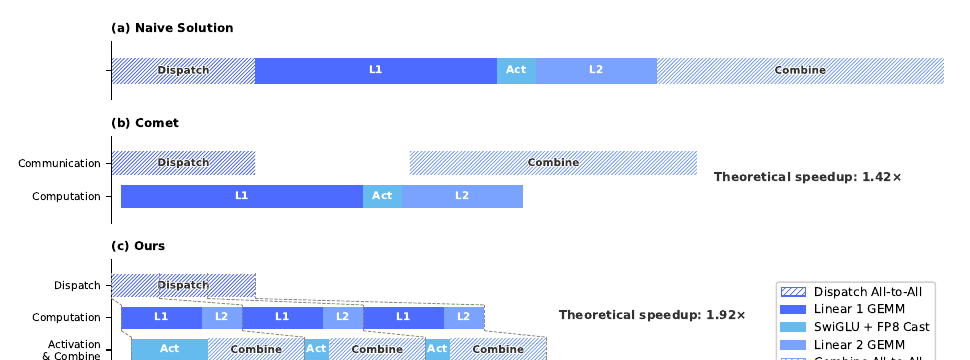
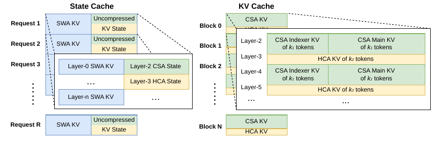
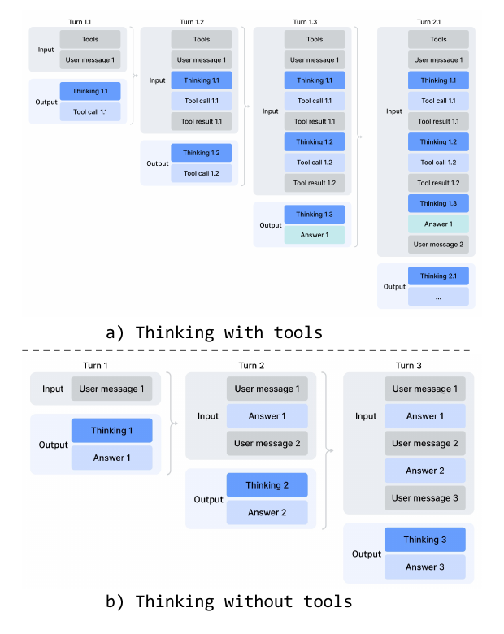
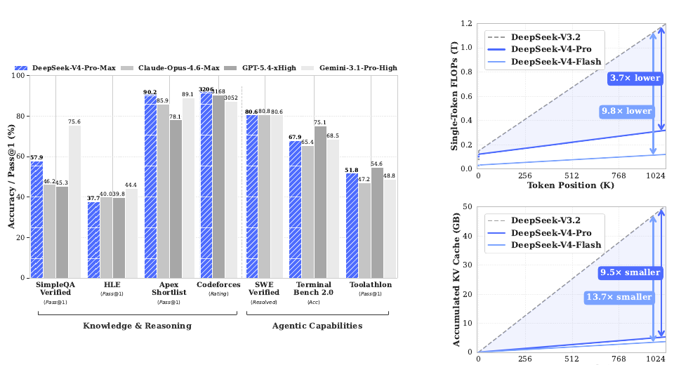
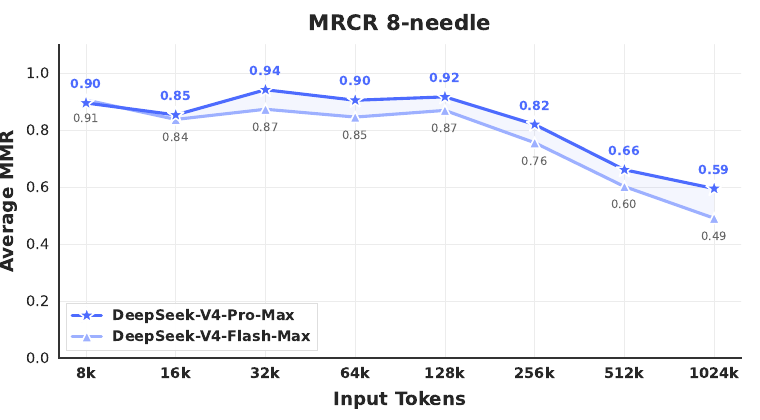
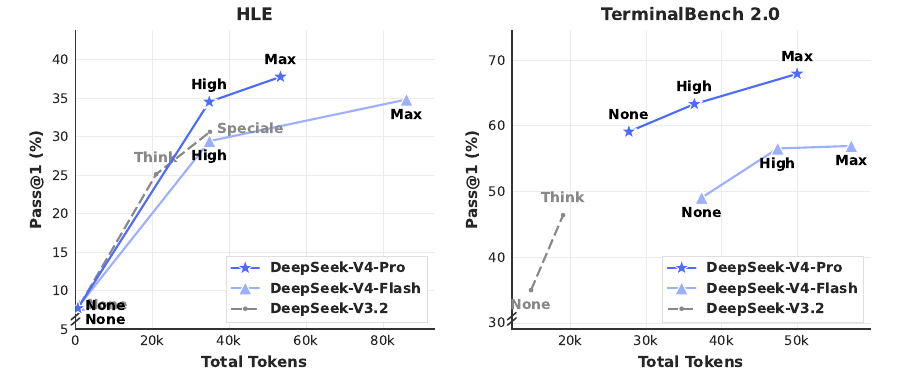
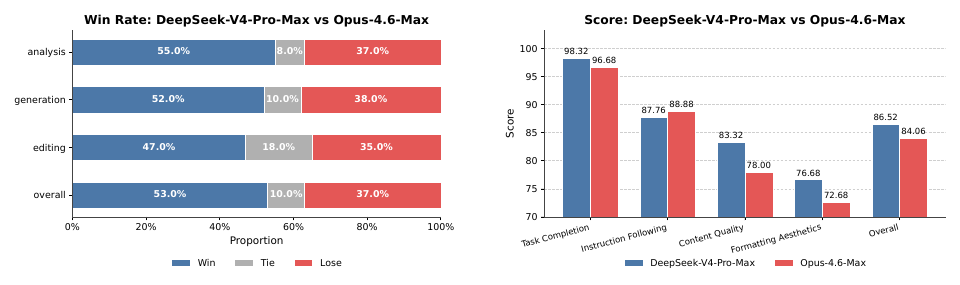

00 · Executive reading核心判断：V4 是一次算法—系统共同设计
DeepSeek-V4 的变化同时发生在模型架构、优化方法、预训练课程、推理系统与后训练基础设施。它保留 Transformer、DeepSeekMoE 与顺序式 MTP，同时更换长上下文注意力、残差连接拓扑和大部分矩阵参数的优化器，并在继承 V3/V3.2 基础设施的基础上扩展关键训练与部署路径。
CSA + HCA
沿序列轴压缩 KV；CSA 再用 DSA 检索少量摘要，HCA 对高度压缩摘要做全局 dense attention。
mHC
把一条残差流扩展为 4 条，并把残差混合矩阵限制到双随机矩阵集合，控制深层传播的放大。
Muon
大部分逻辑矩阵使用正交化更新；V4 采用 8+2 轮 hybrid Newton–Schulz，并为 ZeRO 做系统适配。
Specialists + OPD
各领域 specialist 先 SFT/GRPO，最终统一模型用多教师、全词表 reverse-KL 的 on-policy distillation 合并能力。
本文如何判断“技术来源”
01 · Positioning版本脉络与两款模型的精确规格
论文的叙事并非“推倒重来”：V4 的主干仍是 decoder-only Transformer；MoE 继续采用 DeepSeekMoE；MTP 配置保持 V3 版本。主要升级集中在注意力、残差连接、优化器，以及为它们配套的系统实现。官方摘要将 V4 定义为 preview version，这个版本属性需要贯穿所有性能解读。
| 配置 | DeepSeek-V4-Flash | DeepSeek-V4-Pro |
|---|---|---|
| 总参数 / 激活参数 | 284B / 13B | 1.6T / 49B |
| Transformer 层数 / hidden size | 43 / 4096 | 61 / 7168 |
| 开头两层 | pure SWA | HCA |
| 后续注意力 | CSA、HCA 交替，以 CSA 开始 | CSA、HCA 交替，以 CSA 开始 |
| CSA 压缩率 / Top-k | 4 / 512 | 4 / 1024 |
| HCA 压缩率 | 128 | 128 |
| query heads × head dim | 64 × 512 | 128 × 512 |
| indexer heads × head dim | 64 × 128 | 64 × 128 |
| query compression dim | 1024 | 1536 |
| output groups / group intermediate dim | 8 / 1024 | 16 / 1024 |
| local sliding window | 128 | 128 |
| 共享 / 路由专家 | 1 / 256 | 1 / 384 |
| 每 token 激活路由专家 | 6 | 6 |
| expert intermediate dim | 2048 | 3072 |
| mHC expansion / Sinkhorn 次数 | 4 / 20 | 4 / 20 |
| MTP depth | 1 | 1 |
| 预训练 tokens | 32T | 33T |
| 最大上下文 | 1,048,576 | 1,048,576 |
V4-Flash · 43 layers
compress_ratios。
V4-Pro · 61 layers
02 · Model architecture总体数据流：四条残差流包住注意力与 MoE

Embedding
residual streams
+ local SWA
1 shared + Top-6
state
Next-token LM loss
final hidden → shared prediction head → 主语言模型损失。
1-layer MTP loss
main hidden + shifted ground-truth embedding → MTP Transformer → shared prediction head。MTP 是辅助分支，推理时可移除。
图中每个注意力子层和 MoE 子层都被 mHC 的三类映射包围。这里最容易产生的误读是把 mHC 当成一个更宽的 attention：实际核心 attention/MoE 的输入输出仍为隐藏维度 d，额外宽度主要存在于残差状态，因而参数开销较小，但 activation、跨 pipeline 通信和重计算压力会上升。
V4 的三条架构主线
历史如何表示
CSA 每 4 token 形成重叠摘要，再稀疏选取；HCA 每 128 token 形成单个摘要，所有因果可见的已完成摘要参与全局注意力。
信号如何跨层传播
mHC 用 4 条流增加路径容量，并把主残差混合限制为双随机矩阵，避免任意放大。
矩阵如何更新
大部分二维权重使用 Muon 正交化更新；embedding、输出头、RMSNorm 等仍用 AdamW。
03 · Retained backboneDeepSeekMoE 与 MTP：明确继承，但不是原封不动
3.1 DeepSeekMoE：专家范式保留，路由细节改变
V4 明确采用 DeepSeekMoE：共享专家始终参与，路由专家只激活 Top-k。把残差更新留给外层 mHC 后，一个 token 的 MoE 子层函数可概括为：
官方 checkpoint config 与 inference reference code 进一步固定了路由细节。先计算无界的 affinity；负载均衡 bias 只参与专家集合选择，真正的专家输出权重仍由未加 bias 的 affinity 归一化：
gi,t = ρ · ai,t / Σj∈S_taj,t, i∈St route scale ρ：Flash = 1.5，Pro = 2.5。正文明确给出 affinity 与 balancing 思路；ρ 和归一化执行细节来自官方 config/code。
| 变化 | V3 / 既有做法 | V4 | 解读边界 |
|---|---|---|---|
| Router affinity | Sigmoid(inner product) | √Softplus(inner product) | 单调但不再有固定上界，会改变选中专家的归一化权重；论文未给独立消融，不把动机写死。 |
| 负载均衡 | Auxiliary-loss-free bias | 保留，并加很弱的 sequence-wise balance loss | bias 用于 Top-k 路由，不直接进入专家输出权重；loss 权重 10−4。 |
| 节点限制 | node-limited routing | 取消目标节点数量约束 | 这可能增大通信 fan-out；作者配套重设并行策略，但没有量化通信增幅。 |
| 早期 FFN | 开头存在 dense FFN | 所有 block 使用 MoE；前 3 个 MoE 层为 hash routing | Hash Layers 有明确引用；论文没有说明把它放在前三层的确定动机。 |
3.2 MTP：V3 配置原样延续
V4 的 MTP depth 为 1。主干在位置 i 预测下一个 token；MTP 模块再结合主干状态与真实的下一 token embedding，预测再下一个 token。embedding 与 prediction head 和主模型共享。大部分预训练阶段 MTP loss 权重为 0.3，学习率衰减阶段降至 0.1。
04 · Residual topologymHC：把残差连接变成受约束的多流动态混合
mHC 的出发点不是“再加一条 skip connection”，而是把一个 d 维残差状态扩成 nhc 条流，让网络学会在子层前聚合、子层后写回、跨层混合；随后用几何约束防止这套动态混合破坏残差网络的稳定传播。
4.1 从 Hyper-Connections 到 mHC
标准 Hyper-Connections（HC）把第 l 层的多流状态写作 Xl∈Rn×d，并用三类映射：
如果 Bl 是任意矩阵，多层乘积 BL…B1 可能快速放大激活和梯度。mHC 将 B 投影到 Birkhoff polytope，也就是非负、每行和每列都为 1 的双随机矩阵集合：
4.2 参数如何从当前 token 的状态生成
- 把 4 条残差流展平并做 RMSNorm。
- A、B、C 都由“输入相关动态项 + 每层静态项”组成；动态项前有小初始化 gating factor，让它渐进参与。
- A = Sigmoid(Ã)，C = 2·Sigmoid(C̃)，使读入/写回系数非负且有界。
- 对 B̃ 取指数后执行 20 轮 Sinkhorn–Knopp；每轮先做列归一化 Tc，再做行归一化 Tr，得到近似双随机 B。
多条路径
不同 token 可用不同的 A/B/C，在 4 条残差流之间选择与混合信息。
不任意放大
约束的是 B 主导的残差路径；它不等价于整个非线性网络拥有全局 Lipschitz 保证。
6.7% overhead
融合 kernel、选择性重计算与 DualPipe 调度后，论文报告 overlapped 1F1B stage 的 wall-time overhead 为 6.7%。
05 · Million-token attentionCSA / HCA：压缩、检索与全局覆盖如何配合
V4 的关键变化是把“历史有多少 token”先改写成“历史有多少压缩条目”。CSA 用较轻压缩保留细节，再以 DSA 选择少量条目；HCA 用很强压缩换取对所有历史摘要的 dense 覆盖。两者交替，且每层都附加最近 128 token 的未压缩滑窗。
5.1 CSA：先按序列压缩，再让 DSA 在摘要上做 Top-k

第一步：每 4 token 生成一个“按通道加权”的重叠摘要
CSA 不是对 4 个 token 做简单平均。它先生成两套候选内容 Ca/Cb、权重 logits Za/Zb，并为当前块与前一块分别加入可学习位置偏置 Ba/Bb。每个输出通道都在合计 2m 个位置上独立做 softmax，再对相邻两块进行加权聚合：
Cicomp = Σj∈B_i Sja ⊙ Cja + Σj∈B_(i−1) Sjb ⊙ Cjb m=4 时输出条目数约为 N/4；一个摘要从相邻两块的 8 个 token 中按通道加权聚合信息。首块的前驱 logits 以 −∞ padding、内容以 0 padding。
第二步：Lightning Indexer 扫描所有压缩条目
query hidden state 先降到低秩 latent，再产生多头 indexer query 和每头权重。对压缩 indexer key 的分数可概括为：
St = TopKs(It,s) 64 个 indexer query heads 共享同一个压缩 indexer key KsI,comp；head dim 128。Flash/Pro 分别选 512/1024 个已完成前序压缩条目。
CSA 沿用 DeepSeek-V3.2 的 DSA selector，但候选单元由 V3.2 的 per-token latent KV 改为 V4 的 4:1 压缩条目；压缩器、shared K=V core attention 与 grouped output projection 则共同构成 CSA 的其余部分。
第三步：shared-KV MQA 读取选中的摘要
注意力 query 与 indexer query 共享同一个低秩 query latent。每个被选中的 512 维压缩向量同时充当 key 和 value；多组 query heads 共享这组 K=V，这一 core attention 明确采用 Multi-Query Attention。由于 head 数与 head dim 都很大，V4 另行设计 grouped output projection：先按组把 attention 输出降到中间维度，再整体投影回 hidden size。后者是 CSA/HCA 共用的 V4 设计，不能并入 MQA 的来源关系。
5.2 HCA：每 128 token 一个摘要，不再做 Top-k

非重叠、逐通道的 128:1 压缩
HCA 只生成一套内容 C 和权重 logits Z。对第 i 个 128-token 块加入可学习位置偏置 B 后，各通道在块内独立归一化，再形成一个压缩条目：
S[Bi] = Softmaxm′ positions(Z[Bi] + B), Cicomp = Σj∈B_i Sj ⊙ Cj, m′ = 128 与 CSA 不同，HCA 不读取前一块，也不形成重叠摘要。
低秩 query → dense shared-KV MQA → grouped output
query 仍先压到 latent，再恢复为多头 query；位置 t 只对所有已完成前序压缩块做 dense attention，压缩条目同时充当 K 和 V。多头输出随后经过与 CSA 相同的 grouped output projection：
ot,h = CoreAttn(qt,h, C0:floor(t/m′)comp, C0:floor(t/m′)comp)
| 维度 | CSA | HCA | 互补意义 |
|---|---|---|---|
| 序列压缩 | 4:1，读取相邻两块 | 128:1，非重叠 | CSA 保留更细粒度历史，HCA 用更小候选集覆盖全局。 |
| 候选选择 | DSA / Lightning Indexer Top-k | 无 selector | HCA 没有检索漏选，但摘要更粗；CSA 更细但可能漏检。 |
| 全局注意力 | 只读 512 / 1024 个已选摘要 | 读 query 之前所有已完成压缩块，约 floor(t/128) 个 | 在 1M 序列尾端，HCA 可见的全局条目约 8192 个。 |
| 局部细节 | 128-token SWA branch | 128-token SWA branch | 补足当前未完成压缩块的因果可见性与近期依赖。 |
5.3 两者共享的关键结构
Per-head RMSNorm
每个 query head 与 shared KV head 分别归一化，稳定 attention logits；报告因此没有在 Muon 中使用 QK-Clip。
Partial RoPE + inverse rotation
512 维只对最后 64 维施加 RoPE；由于同一压缩向量也作 value，输出相应维度再做逆旋转，尽量恢复相对位置信息。
Sliding window = 128
严格因果压缩只允许访问已完成块；未压缩窗口让 query 看到自己所在块内更早的 token。
Attention sink
每个 head 增加只有 logit、没有 value 的 sink，使总内容 attention mass 可以小于 1，不必把概率强行分给无关历史。
5.4 为什么 KV cache 能降到约 2%
论文以 BF16 GQA8、head dim 128 为另一个基线。该基线每 token、每层的 K/V 为 4096 bytes。V4 的 shared K=V 条目有 512 维：64 个 RoPE 维用 BF16，其余 448 维用 FP8，因此一个压缩条目约 576 bytes。
HCA：576 / 128 = 4.5 B/token
若两类层近似各半：(144 + 4.5) / 2 / 4096 ≈ 1.81% 再计入 indexer key、局部窗口和未完成压缩块状态后，与论文“约 2%”的数量级一致。这是核算推导，不是完整 cache accounting。
06 · OptimizationMuon：把大部分矩阵更新变成近似正交化
V4 明确沿用 Muon 及其可扩展 LLM 版本的 weight decay、update scaling 思路。大部分逻辑独立矩阵使用 Muon；embedding、prediction head、mHC 静态 bias / gating factor 和所有 RMSNorm 权重仍使用 AdamW。
Nesterov look-ahead
Newton–Schulz
√max(n,m) · γ
γ = 0.18
weight decay
6.1 V4 的 8+2 轮 Newton–Schulz
迭代前先以 Frobenius norm 归一化输入矩阵：M0 = M / ‖M‖F，使最大奇异值不超过 1；随后执行 10 轮五阶多项式 Newton–Schulz 迭代。正交化结果再乘 √max(n,m)·γ，其中 γ=0.18 对应目标 update RMS：
Muon 需要看到完整逻辑矩阵才能正交化，不能像逐元素 AdamW 那样任意把同一矩阵切到多个 ZeRO rank。这一算法约束在 dense 参数上引出 hybrid ZeRO 与完整矩阵装箱；在 MoE 参数上又引出不切断逻辑矩阵的分配方式，以及 BF16 梯度交换后本地 FP32 求和。
07 · Systems co-design训练与推理系统：算法目标背后的工程底座
V4 的系统章节覆盖算子融合、并行、缓存、确定性和量化。尽管报告没有给出完整线上集群拓扑，百万上下文与超大 MoE 的可落地性仍明显依赖这一整套系统协同。
7.1 Expert Parallelism：把专家拆成 wave

论文将 dispatch、Linear-1、SwiGLU/FP8 cast、Linear-2、combine 融入 mega-kernel。Figure 5 在 V4-Flash 架构配置下给出 1.92× 理论加速；相对强 non-fused baseline，该 EP/MoE 局部方案在一般推理负载实测 1.50–1.73×，在 RL rollout / 高速 agent serving 场景最高 1.96×。这些不是整模型端到端加速倍数。实现以 MegaMoE2 形式进入 DeepGEMM，并在 NVIDIA GPU 与华为昇腾 NPU 上验证。
7.2 TileLang：不只是“方便写算子”
< 1 μs 检查
设备 kernel 与 launcher 在 IR 层共同生成，把 dtype/shape/stride/layout 检查移出 Python 热路径。
Z3 · QF_NIA
在资源限制内辅助分析多数整数表达式，执行边界分析与潜在 memory-hazard 检测，并推导 vectorization / barrier 条件。
明确舍入与执行布局
默认关闭 fast-math；需要时用 layout annotation 固定执行布局，并让 lowering 规则与 CUDA baseline 对齐，可实现 bit-identical 结果。
7.3 Batch invariance 与 deterministic kernel
两者解决不同问题：batch invariance 要求同一 token 不因 batch 位置改变而改变输出；determinism 要求同一训练状态重复执行得到逐 bit 相同更新。V4 对 attention 使用双 kernel 避免 split-KV 改变累加顺序；GEMM 以 DeepGEMM 替代 cuBLAS并尽量避免 split-k；稀疏 attention backward、MoE 与 mHC 的 split-k 都采用固定顺序的独立归约。
确定性栈与 WAL 是两条相关但不同的恢复路径：batch-invariant + deterministic kernel 配合相同随机种子，可以从头重生成未完成请求并保持数学正确，但需要重复 decode；token-granular WAL 则持久化已生成 token，并结合保存的 KV cache 直接续跑，在 KV 丢失时也可用 WAL token 重新 prefill，避免从头重新采样带来的 length bias 与额外计算。
7.4 训练并行与内存
| 对象 | 系统改造 | 公开边界 |
|---|---|---|
| Dense Muon + ZeRO | 完整逻辑矩阵按 knapsack 分给 rank；每 rank 最多管理 5 个矩阵；bucket padding 通常 <10%。 | 未给端到端训练吞吐和相对 AdamW 系统开销。 |
| MoE Muon 通信 | 按 expert 的 down/up/gate 矩阵展开但不切断逻辑矩阵；MoE 梯度随机舍入到 BF16，经 all-to-all 交换后在本地用 FP32 求和。 | 论文称 padding 可忽略、通信量减半，但未给完整通信 breakdown。 |
| mHC | 融合 kernel、选择性中间量 checkpoint、调整 DualPipe 1F1B 以和 pipeline 通信并发。 | 公开 6.7% overlapped-stage wall-time overhead。 |
| CSA/HCA Context Parallelism | 每个 rank 先把最后 m 个未压缩 KV 边界条目发给下一 rank，再 all-gather 压缩 KV；fused select-and-pad 处理不等长 packed sequence。 | 未给 1M 训练吞吐、并行度或显存。 |
| Activation checkpoint | TorchFX 追踪 tensor-level 最小重算图；释放被标记 tensor 的显存，并把重算 tensor 的 storage pointer 回接到原 tensor，避免额外 copy。 | 称无额外训练开销，但未给显存节省比例。 |
7.5 异构 KV cache 与磁盘前缀复用

传统 PagedAttention 假设不同层的 cache 更新与淘汰策略相近；V4 中 SWA、CSA、HCA 的尺寸、更新频率和 alignment 要求不同，因此单一分页布局不够。磁盘前缀缓存对 CSA/HCA 保存所有已完成压缩条目；SWA 因体积约为压缩 cache 的 8 倍，提供 full caching、periodic checkpointing 和 zero SWA caching 三种空间—重算折中。
| 部署维度 | V4 报告明确披露 | 没有披露 / 不能推断 |
|---|---|---|
| 算子优化与融合 | MoE mega-kernel、wave pipeline、TileLang、DeepGEMM、确定性 attention/MoE/mHC kernel | 未给完整线上模型的端到端 kernel breakdown |
| 并行策略 | EP、hybrid ZeRO、DualPipe 适配、compressed-attention CP | 训练集群卡数/节点数、线上 TP/PP/EP 配置 |
| 多级缓存 | state cache + classical KV cache + on-disk prefix cache | 磁盘介质、命中率、带宽、TTFT 数据 |
| MTP 与异步调度 | 模型保留 1-layer MTP；rollout 支持 token-granular WAL、抢占与恢复 | 未说明 MTP speculative decoding；未给生产 serving 异步调度全貌 |
| 量化与稀疏 | FP4 experts、FP4 CSA indexer、FP8/BF16 mixed KV、CSA Top-k | 缺少端到端 FP4 latency/throughput/显存对照 |
08 · Pre-training数据、长度课程与训练稳定性
8.1 数据构建
数据与 tokenizer 管线总体建立在 DeepSeek-V3 上，继续使用 token splitting 与 FIM，数学和编程语料仍是核心。V4 明确新增或加强批量自动生成/模板网页过滤、多语言扩容、mid-training agentic data、论文与技术报告等长文档策展，以及 sample-level attention masking。词表正文写约 128K，官方 checkpoint config 为 129,280。
8.2 训练课程与超参数
| 项目 | V4-Flash | V4-Pro |
|---|---|---|
| 训练 tokens | 32T | 33T |
| 序列长度 | 4K → 16K → 64K → 1M | 4K → 16K → 64K → 1M |
| 最大 batch | 75.5M tokens | 94.4M tokens |
| Peak → final LR | 2.7e−4 → 2.7e−5 | 2.0e−4 → 2.0e−5 |
| Warm-up | 2000 steps | 大体相同 |
| Sparse attention curriculum | 前 1T tokens dense；到 64K 阶段引入 sparse，先 warm up indexer | dense stage 更长，具体 token 数未披露 |
| MTP loss | 通常 0.3，LR decay 后 0.1 | 同左 |
8.3 Anticipatory Routing 与 SwiGLU clamp
作者观察到 loss spike 与 MoE outlier 同步，routing 会放大这一问题。Anticipatory Routing 在异常期用历史参数预先计算未来 batch 的 routing indices；检测 spike 后短暂 rollback 并启用该模式，稳定后恢复正常。启用期间 wall-clock overhead 约 20%，但作者称它只在短时异常期运行，总体开销可忽略。
SwiGLU 对 linear component clamp 到 [−10,10]，gate component 只限制上界为 10。报告未披露 Anticipatory Routing 的历史间隔 Δt、loss-spike detector 阈值、rollback 长度、启用时长/频率，也没有给出完整 loss curve 与独立消融。
8.4 训练资源：论文没有给出
报告没有披露训练 GPU/NPU 型号、卡数、节点数、训练天数、GPU-hours、总 FLOPs、训练成本、吞吐或 MFU。EP kernel 在 NVIDIA GPU 与昇腾 NPU 上验证只构成算子可移植性证据，并不构成实际预训练硬件配置证据。
09 · Post-trainingSpecialists、全词表 OPD 与长时 Agent 基础设施
9.1 能力合并范式：从 mixed RL 转向多教师 OPD
这句话不等于“不再做 RL”。各领域 specialist 仍先做 domain SFT，再用 GRPO 做数学、代码、agent、instruction following 等领域强化学习；变化发生在最终统一模型：V3.2 的 mixed RL 合并被超过 10 个 teacher 的多教师 OPD 替代。
SFT
GRPO
on-policy rollout
reverse KL
policy
9.2 全词表 OPD 为什么需要专门系统
- teacher 权重放在集中式分布存储，forward 时按需加载，并采用 ZeRO-like sharding。
- 不缓存超过 100K 词表的完整 logits，只缓存 teacher 最后一层 hidden state；训练时按需经过对应 prediction head 重建。
- 样本按 teacher index 排序，同一 teacher head 每个 mini-batch 只加载一次；GPU 同时最多常驻一个 teacher head。
- 使用专门 TileLang kernel 计算 exact full-vocab KL，并异步重叠权重/hidden-state I/O。
“effectively unbounded teachers”是框架扩展性表述；实际 V4 只公开“超过 10 个”，没有公布 teacher 名称、参数规模、权重 wi、OPD tokens 或训练步数。
9.3 Reasoning Effort 不是单一推理旋钮
Non-think、Think High、Think Max 来自不同的 RL length penalty 与 context 配置；Think Max 还额外加入强调最大努力的 system instruction。评测窗口分别为 8K、128K、384K，但这不是论文公开的 RL 训练窗口。三档之间同时变化训练、长度预算、上下文与 prompting，因此不能当作严格单变量消融。
9.4 GRM、工具调用与 Interleaved Thinking
易验证任务仍用规则/测试；难验证任务使用 rubric-guided data，actor 本身也作为 Generative Reward Model 生成判断，并通过 RL 联合提升生成与评估。工具协议采用 DSML XML schema；Quick Instruction 用专用 token 复用同一 KV cache 完成搜索触发、query、authority、URL 读取等辅助任务，目标是避免额外小模型重复 prefill。

9.5 FP4 QAT：量化两处最贵路径
| 对象 | 做法 | 公开结果 |
|---|---|---|
| MoE expert weights | FP32 master → MXFP4；训练计算前无损嵌入 FP8 表示；STE 回传；rollout/部署直接使用 native FP4 | 未给端到端模型吞吐、延迟、显存或质量消融 |
| CSA indexer QK | Q/K activation FP4 cache、FP4 load/multiply；index score FP32 → BF16 | Top-k selector 2×；KV entry recall 99.7% |
“无损”只指满足 scale 条件时 FP4 值能无损表示为 FP8，并不表示 FP32→FP4 无损。现有硬件的 FP4×FP8 峰值与 FP8×FP8 相同，因此当前收益主要来自存储与 memory traffic，而不是自动兑现理论 FLOPs 峰值。
9.6 可抢占 rollout、百万 token RL 与 DSec
Token-granular WAL
每生成一个 token 追加日志；抢占时保存未完成 request 的 KV，恢复后继续 decode；硬件故障丢 KV 时用 WAL token 重建。
Metadata / heavy fields 分离
轻 metadata 全量加载用于 shuffle/packing，重 per-token fields 经共享内存按 mini-batch 读取并立即释放。
DSec
Rust Apiserver / Edge / Watcher + 3FS，支持 function、container、microVM 与 fullVM；单集群管理数十万并发 sandbox。
10 · Evaluation性能提升成立到什么程度

10.1 Base 模型：Flash 更小但并非全面优于 V3.2
| Benchmark | V3.2-Base | V4-Flash-Base | V4-Pro-Base |
|---|---|---|---|
| LongBench-V2 | 40.2 | 44.7 | 51.5 |
| MMLU-Pro | 65.5 | 68.3 | 73.5 |
| Simple-QA verified | 28.3 | 30.1 | 55.2 |
| FACTS Parametric | 27.1 | 33.9 | 62.6 |
| HumanEval | 62.8 | 69.5 | 76.8 |
| BigCodeBench | 63.9 | 56.8 | 59.2 |
| MATH | 60.5 | 57.4 | 64.5 |
因此更准确的总结是：Flash 用 13B activated、284B total 在多数项目超过 37B/671B 的 V3.2-Base，但代码与部分数学任务存在回退；Pro 整体最强，也不是所有 benchmark 都领先。基础模型差异同时混合了新数据、参数规模、架构和训练优化，不能把全部提升归给 CSA/HCA 或 Muon。
10.2 1M context：原生训练，但不是性能无损

10.3 Reasoning effort：效果与 token 成本同时增加

10.4 代表性优势与仍有差距的项目
V4-Pro-Max 代表结果
LiveCodeBench 93.5、Codeforces 3206、Apex Shortlist 90.2、SWE Verified 80.6、BrowseComp 83.4、MRCR 1M 83.5、MCPAtlas 73.6。
并非闭源模型全面领先
SimpleQA-Verified 57.9 低于 Gemini 75.6；TerminalBench 67.9 低于 GPT-5.4 75.1；HLE with tools 48.2 较弱；GDPval-AA 1554 低于 GPT-5.4/Opus。
10.5 内部真实任务：有价值，但可复现性有限

内部代码 agent 仅从约 200 个任务筛到 30 个：V4-Pro-Max pass rate 67%，低于 Opus 4.6 Thinking 的 80%。作者还主动承认格式约束、长文压缩、幻灯片视觉设计、低级错误与偶发过度思考仍有问题。这些反例应与 headline benchmark 一起保留。
11 · Technical provenance技术谱系：哪些可以画实线，哪些只能画虚线
共享 + 细粒度路由专家
Sqrt-Softplus / no node limit / hash early layers
Multi-Token Prediction
多残差流
4 streams + Birkhoff / Sinkhorn
Lightning Indexer
先 4:1 压缩，再稀疏检索
shared K/V
shared K=V MQA
Scalable Muon · 2025
8 fast + 2 stable iterations
full-vocab reverse-KL OPD
per-token channel compression
sequence-axis compression
| 技术点 | 可确认的前序工作 | V4 中的变化 | 证据等级 |
|---|---|---|---|
| DeepSeekMoE | DeepSeekMoE → DeepSeek-V3 | 路由 affinity、节点约束、前三层 hash routing 改动 | 明确继承 |
| mHC | Hyper-Connections → mHC 独立论文 | V4 直接采用 n=4、20 次 Sinkhorn | 明确继承 |
| DSA in CSA | DeepSeek-V3.2 DSA | 对 4:1 压缩块而非 per-token latent 做 Top-k | 明确继承 |
| CSA compressor | 报告未给明确外部祖先 | 重叠、含位置偏置的按通道 token 聚合 | 报告中作为 V4 新组件提出；未确认更早直接来源 |
| HCA | 报告未给明确外部祖先 | 128:1 压缩后做全局 dense shared-KV MQA | 报告中作为 V4 新组件提出；未确认更早直接来源 |
| Shared-KV MQA | Shazeer 2019 | 一个压缩条目同时作为 K 和 V，供多 query heads 共享 | 报告引用 |
| Grouped output projection | 报告未给明确外部祖先 | CSA/HCA 按组降到中间维度，再投影回 hidden size | 报告中作为 V4 设计提出；未确认更早直接来源 |
| Attention sink / RoPE | Attention Sinks；RoFormer | learnable sink、64/512 partial RoPE 与 output inverse rotation | 基础技术为报告引用；组合与 inverse rotation 属 V4 具体实现 |
| Muon | Muon → Muon is Scalable | hybrid Newton–Schulz 与大规模系统适配 | 明确继承 |
| TileLang | TileLang | host codegen、Z3 分析、可复现 kernel 栈 | 明确采用 |
| GRPO | DeepSeekMath | 领域 specialists 的 RL | 明确采用 |
| OPD | MiniLLM、Thinking Machines OPD | 多教师、全词表、trillion-scale teacher scheduling | 报告引用 + V4 工程化 |
12 · Evidence boundaries局限、未披露项与阅读时应保留的折扣
缺少模块级大消融
没有 CSA-only、HCA-only、mHC-off、Muon-off 的同规模完整对照，难以拆分单项贡献。
训练账单缺失
没有硬件型号、卡数、天数、GPU-hours、总 FLOPs、成本、吞吐与 MFU。
数据构成不透明
没有类别/语言比例、去重率、截止日期、污染分析与后训练数据量。
系统点多，端到端数据少
QAT、磁盘 KV、checkpoint、MTP serving 等缺少完整线上 latency/throughput/成本消融。
内部 harness 较多
白领、搜索、R&D code agent 与部分 rubric 难以外部复现；部分外部对照结果也未报告。
1M 不等于无损
MRCR 在 128K 后显著退化；Figure 1 是 estimated FLOPs/KV，不是端到端速度。
作者在结论中也承认，为降低超长上下文架构风险，保留了许多初步验证的组件与技巧，造成整体复杂；Anticipatory Routing 与 SwiGLU clamp 的原理仍不充分理解；长上下文交互延迟、长时多轮 agent、多模态和数据清洗仍是后续方向。
13 · Primary sources参考资料与溯源链接
- DeepSeek-V4: Towards Highly Efficient Million-Token Context Intelligence
- DeepSeek-V4-Flash official config · fd53f94
- DeepSeek-V4-Pro official config · 4504094
- DeepSeek-V4 official inference reference implementation
- DeepSeekMoE
- DeepSeek-V3 Technical Report
- DeepSeek-V3.2 / DeepSeek Sparse Attention
- Auxiliary-Loss-Free Load Balancing Strategy for MoE
- Hash Layers for Large Sparse Models
- Hyper-Connections
- mHC: Manifold-Constrained Hyper-Connections
- Multi-Query Attention: One Write-Head is All You Need
- DeepSeek-V2 / Multi-head Latent Attention
- RoFormer / Rotary Position Embedding
- Efficient Streaming Language Models with Attention Sinks
- Better & Faster LLMs via Multi-token Prediction
- Muon: An Optimizer for Hidden Layers
- Muon is Scalable for LLM Training
- TileLang · GitHub
- FlashMoE · Comet · MegaMoE2 / DeepGEMM
- DeepEP（外部框架对照；V4 报告未确认采用） · Mooncake（外部框架对照） · vLLM 的 V4 实现说明
- DeepSeekMath / GRPO
- MiniLLM: On-Policy Distillation
- Thinking Machines: On-Policy Distillation
- Quantization and Training of Neural Networks for Efficient Integer-Arithmetic-Only Inference
- Microscaling Data Formats / MXFP4 · OCP MX specification